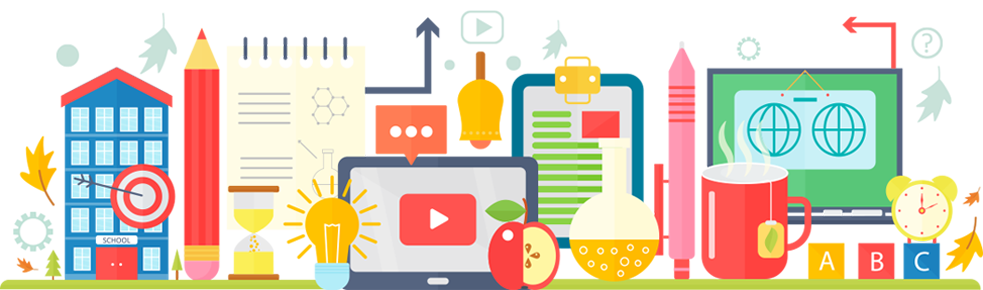
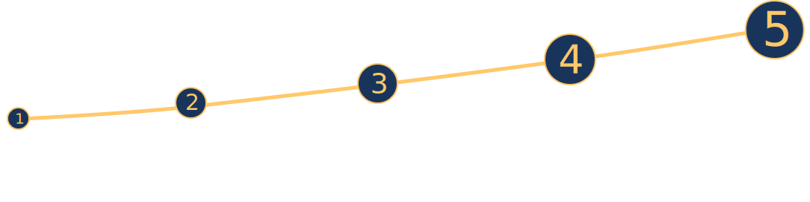

<!DOCTYPE html>
<html>
  <head>
    <meta charset="utf-8">
    <title>Фоксфорд</title>
    <meta content="" name="author">
    <meta content="" name="description">
    <meta content="" name="keywords">
    <meta content="width=device-width, initial-scale=1" name="viewport">
    <meta content="ie=edge" http-equiv="x-ua-compatible">
    <link rel="icon" href="img/favicon.ico" type="image/x-icon">
    <link rel="stylesheet" href="assets/styles/vendor.css">
    <link rel="stylesheet" href="assets/styles/main.css">
    <script src="assets/scripts/common.js" defer></script>
    <script src="assets/scripts/app.bundle.js" defer></script><!--[if lt IE 9]>
    <script src="http://cdnjs.cloudflare.com/ajax/libs/html5shiv/3.7.2/html5shiv.min.js"></script><![endif]-->
  </head>
  <body>
    <script type="text/javascript">
      (function(i,s,o,g,r,a,m){i['GoogleAnalyticsObject']=r;i[r]=i[r]||function(){
      (i[r].q=i[r].q||[]).push(arguments)},i[r].l=1*new Date();a=s.createElement(o),
      m=s.getElementsByTagName(o)[0];a.async=1;a.src=g;m.parentNode.insertBefore(a,m)
      })(window,document,'script','https://www.google-analytics.com/analytics.js','ga');
      ga('create', 'UA-85680372-28', 'auto');
      ga('send', 'pageview');
    </script>
    <script type="text/javascript">
      (function (d, w, c) {
        (w[c] = w[c] || []).push(function() {
          try {
              w.yaCounter45786102 = new Ya.Metrika({
                  id:45786102,
                  clickmap:true,
                  trackLinks:true,
                  accurateTrackBounce:true,
                  webvisor:true
              });
          } catch(e) { }
        });
      
          var n = d.getElementsByTagName("script")[0],
              s = d.createElement("script"),
              f = function () { n.parentNode.insertBefore(s, n); };
          s.type = "text/javascript";
          s.async = true;
          s.src = "https://cdn.jsdelivr.net/npm/yandex-metrica-watch/watch.js";
      
          if (w.opera == "[object Opera]") {
              d.addEventListener("DOMContentLoaded", f, false);
          } else { f(); }
      })(document, window, "yandex_metrika_callbacks");
    </script>
    <noscript>
      <div></div>
    </noscript>
    <script type="text/javascript">
      var axel = Math.random() + "";
      var a = axel * 10000000000000;
      document.write('<iframe src="https://8082259.fls.doubleclick.net/activityi;src=8082259;type=invmedia;cat=bromupn2;dc_lat=;dc_rdid=;tag_for_child_directed_treatment=;ord=' + a + '?" width="1" height="1" frameborder="0" style="display:none"></iframe>');
    </script>
    <noscript>
      <iframe src="https://8082259.fls.doubleclick.net/activityi;src=8082259;type=invmedia;cat=bromupn2;dc_lat=;dc_rdid=;tag_for_child_directed_treatment=;ord=1?" width="1" height="1" frameborder="0" style="display:none;"></iframe>
    </noscript><!--[if lt IE 7]>
<p class="browsehappy">Вы используете <strong>устаревший</strong> браузер. Пожалуйста <a href="http://browsehappy.com/">обновите его</a></p>
<![endif]-->
    <div class="wrapper">
      <section class="section main">
        <div class="header">
          <div class="container"><a class="logo logo_foxford" href="https://foxford.ru/" target="_blank"></a><a class="logo logo_dnevnik" href="https://dnevnik.ru/" target="_blank"></a></div>
        </div>
        <div class="container">
          <div class="main__logo"> </div>
          <div class="main__title"><span class="main__icon main__icon_left"></span><span class="main__icon main__icon_right"></span>
            <h1 class="title">Гид по дистанционному образованию от Фоксфорд и Дневник.ру</h1>
          </div>
          <p class="main__content"><span>Интернет предлагает различные варианты как закрепить и углубить знания по школьным предметам. </span><span>Какие из них гарантируют результат?</span><span>Проанализируйте успехи ребенка в трех областях наук и получите рекомендации по улучшению его успеваемости и расширению кругозора!</span></p>
          <div class="partion main__partion">
            <h2 class="partion__title">Выберите интересующую вас научную область!</h2>
            <ul class="partion__list">
              <li class="partion__item partion__item-e" data-type="e" onclick="ga('send','event','Естественные науки','Клик');yaCounter45786102.reachGoal('clickBio');"><a class="partion__link partion__link-e" href="/">Естественные науки</a></li>
              <li class="partion__item partion__item-t" data-type="t" onclick="ga('send','event','Точные науки','Клик');yaCounter45786102.reachGoal('clickMath');"> <a class="partion__link partion__link-t" href="/">Точные науки</a></li>
              <li class="partion__item partion__item-g" data-type="g" onclick="ga('send','event','Гуманитарные','Клик');yaCounter45786102.reachGoal('clickHuman');"><a class="partion__link partion__link-g" href="/">Гуманитарные науки</a></li>
            </ul>
          </div>
        </div>
      </section>
      <section class="section marks">
        <div class="container">
          <div class="mark__title"> </div>
          <div class="mark__mark"> </div>
        </div>
      </section>
      <section class="section info">
        <div class="container">
          <div class="info__title"><span class="info__icon info__icon_left"></span><span class="info__icon info__icon_right"></span>
            <h1 class="title">Как улучшить средний балл по предметам гуманитарного цикла?</h1>
          </div>
          <div class="info__content">
            <ul class="texts texts_top info__texts">
              <li class="texts__item text__item_0">
                <svg class="texts__icon">
                  <use xlink:href="assets/img/sprite/sprite.svg#fig1"></use>
                </svg>
                <div class="texts__text">
                  <h3 class="texts__title">Поработайте над грамотностью. </h3>
                  <p class="texts__content">
                     На портале Грамота.ру всегда можно 
                    проверить правописание слов, повторить
                    правила русского языка и даже задать
                    вопрос консультанту, если ответа не нашлось на сайте. 
                  </p>
                </div>
              </li>
              <li class="texts__item text__item_2">
                <svg class="texts__icon">
                  <use xlink:href="assets/img/sprite/sprite.svg#fig2"></use>
                </svg>
                <div class="texts__text">
                  <h3 class="texts__title">Учите иностранные языки в формате игры.</h3>
                  <p class="texts__content">Если традиционный школьный формат изучения языков даётся ребёнку с трудом, попробуйте Lingualeo — ресурс, который помогает превратить изучение языков в игру. </p>
                </div>
              </li>
              <li class="texts__item text__item_4">
                <svg class="texts__icon">
                  <use xlink:href="assets/img/sprite/sprite.svg#fig3"></use>
                </svg>
                <div class="texts__text">
                  <h3 class="texts__title">Подтяните знания с репетитором. </h3>
                  <p class="texts__content">Чтобы ребёнок не утратил мотивацию к учебе, иногда нужна помощь профессионала. Репетитор «Фоксфорда» подготовит 		к контрольным и составит программу обучения с учетом уровня знаний ребёнка.              </p>
                </div>
              </li>
            </ul>
            <div class="info__diagram"><span class="info__line info__line_one"></span><span class="info__line info__line_two"></span><span class="info__line info__line_three"></span><span class="info__line info__line_four"></span><span class="info__line info__line_five"></span></div>
            <ul class="texts texts_bottom info__texts">
              <li class="texts__item text__item_1">
                <svg class="texts__icon">
                  <use xlink:href="assets/img/sprite/sprite.svg#fig4"></use>
                </svg>
                <div class="texts__text">
                  <h3 class="texts__title">Читайте. </h3>
                  <p class="texts__content">В процессе чтения ребёнок усваивает правила грамматики, учится образно мыслить и тренирует зрительную память. 20 страниц художественной литературы в день — необходимый минимум.</p>
                </div>
              </li>
              <li class="texts__item text__item_3">
                <svg class="texts__icon">
                  <use xlink:href="assets/img/sprite/sprite.svg#fig5"></use>
                </svg>
                <div class="texts__text">
                  <h3 class="texts__title">Развивайте фантазию. </h3>
                  <p class="texts__content">Плохо даются сочинения и творческие работы? Развивайте семантическую память и воображение: составьте список из 10 случайных слов и свяжите их в один рассказ.               </p>
                </div>
              </li>
            </ul>
            <div class="info__images info__images_one"></div>
            <div class="info__images info__images_two"> </div>
          </div>
        </div>
      </section>
      <section class="section article">
        <div class="container">
          <div class="article_btn-wrapper"><a class="article__btn article__btn_top" target="_blank">Получить бесплатное занятие</a></div>
          <div class="article__title">Курсы или репетитор: что выбрать?</div>
          <p class="article__content">
            Стараний ребенка, усилий школьного учителя и помощи родителей может быть недостаточно для хороших оценок и высокого балла на экзамене. И здесь на помощь школьнику приходит дополнительное образование: специальные курсы или занятия с репетитором.
            Но подобрать подходящего преподавателя или курсы не так-то просто. Если ребенок не нашел общий язык с педагогом или не справляется с предложенной нагрузкой, вы можете потерять время и деньги. В онлайн-школе «Фоксфорд» специалисты сначала определяют, что именно вам нужно, а потом предлагают вам репетитора или подбирают профильные курсы. 
          </p>
          <div class="article__title">Кому подойдут курсы?</div>
          <p class="article__content">Онлайн-курсы подойдут мотивированному школьнику, который успевает по школьной программе, но хочет получить углубленные знания по предмету, победить на олимпиаде или сдать ОГЭ и ЕГЭ на 85+ баллов. Чтобы ваш способный ребенок не скучал на уроках и получил дополнительную пищу для ума, отправьте его на углубленный или олимпиадный курс от преподавателей МФТИ или ВШЭ. Это поможет развить его способности, усовершенствовать навыки и поступить в престижный вуз по выбранной специальности.</p>
          <div class="article__title">Кому подойдет репетитор?</div>
          <p class="article__content">Репетитор подойдет ребенку, который нуждается в индивидуальной подготовке. Если у ребенка плохие оценки, есть пробелы в знаниях, если он «не тянет» программу — поможет репетитор. В «Фоксфорде» есть возможность посетить бесплатное пробное занятие. После регистрации консультант подберет вам удобную дату и время вводного занятия. Само занятие проходит по Skype, как и последующая работа с репетитором. Оценив уровень вашего ребенка и его индивидуальные потребности на бесплатном занятии, методист выберет ему подходящего репетитора. Уже на следующий день ребенок может приступить к занятиям. Если вы захотите поменять репетитора, это не проблема: специалисты предложат вам другого.</p>
          <div class="article__title">Онлайн-курс или репетитор?</div>
          <p class="article__content">
            Каждый курс «Фоксфорда» — это серия еженедельных вебинаров по выбранному предмету. В определенное время школьники подключаются к трансляции. Во время вебинара можно  задать вопрос преподавателю через чат, а после занятия в личном кабинете учеников ждёт домашнее задание. Задания проверяются автоматически. При необходимости можно просмотреть запись занятия. 
            Индивидуальные занятия с репетитором по Skype проходят тет-а-тет в удобное для ученика время. Ребенок и репетитор слышат и видят друг друга и находятся в постоянном контакте. Количество занятий зависит от способностей ребенка и цели, которой необходимо достичь.
          </p>
          <div class="article__title">Несколько фактов о Фоксфорде.</div>
          <ul class="article__content">
            <li>Фоксфорд — крупнейшая онлайн-школа в России. В ней учатся уже более 1 000 000 школьников.</li>
            <li>Педагоги — эксперты ЕГЭ и ОГЭ, составители олимпиад и преподаватели лучших вузов страны.</li>
            <li>Выпускники Фоксфорда сдают ЕГЭ на 25 баллов выше, чем в среднем по стране. </li>
            <li>Выпускники Фоксфорда поступают на бюджет в МГУ, НИУ ВШЭ, МФТИ и МГТУ им. Н. Э. Баумана.</li>
            <li>Учиться в школе можно с любого устройства: компьютера, планшета или смартфона.</li>
          </ul>
          <p class="article__content">
             Посмотрите ролик о том, как проходят занятия в Фоксфорде, а лучше попробуйте сами. Первое занятие — бесплатное.</p>
          <p class="article__content video">
            <iframe width="560" height="315" src="https://www.youtube.com/embed/PjJ0I_9Vq9s" frameborder="0" allowfullscreen></iframe>
          </p>
          <div class="article_btn-wrapper"><a class="article__btn article__btn_bottom" target="_blank">Получить бесплатное занятие</a></div>
        </div>
      </section>
      <div id="modal-parent">
        <div class="parent modal">
          <div class="parent__title"></div>
          <div class="parent__content"></div><a class="parent__close" href="#close" rel="modal:close">
            <svg class="close__icon" viewBox="0 0 21.9 21.9" enable-background="new 0 0 21.9 21.9">
              <path d="M14.1,11.3c-0.2-0.2-0.2-0.5,0-0.7l7.5-7.5c0.2-0.2,0.3-0.5,0.3-0.7s-0.1-0.5-0.3-0.7l-1.4-1.4C20,0.1,19.7,0,19.5,0  c-0.3,0-0.5,0.1-0.7,0.3l-7.5,7.5c-0.2,0.2-0.5,0.2-0.7,0L3.1,0.3C2.9,0.1,2.6,0,2.4,0S1.9,0.1,1.7,0.3L0.3,1.7C0.1,1.9,0,2.2,0,2.4  s0.1,0.5,0.3,0.7l7.5,7.5c0.2,0.2,0.2,0.5,0,0.7l-7.5,7.5C0.1,19,0,19.3,0,19.5s0.1,0.5,0.3,0.7l1.4,1.4c0.2,0.2,0.5,0.3,0.7,0.3  s0.5-0.1,0.7-0.3l7.5-7.5c0.2-0.2,0.5-0.2,0.7,0l7.5,7.5c0.2,0.2,0.5,0.3,0.7,0.3s0.5-0.1,0.7-0.3l1.4-1.4c0.2-0.2,0.3-0.5,0.3-0.7  s-0.1-0.5-0.3-0.7L14.1,11.3z"></path>
            </svg></a>
        </div>
      </div>
      <div id="modal-child">
        <div class="child modal">
          <div class="child__title">Выберите ребенка</div>
          <ul class="child__content"></ul><a class="parent__close" href="#close" rel="modal:close">
            <svg class="close__icon" viewBox="0 0 21.9 21.9" enable-background="new 0 0 21.9 21.9">
              <path d="M14.1,11.3c-0.2-0.2-0.2-0.5,0-0.7l7.5-7.5c0.2-0.2,0.3-0.5,0.3-0.7s-0.1-0.5-0.3-0.7l-1.4-1.4C20,0.1,19.7,0,19.5,0  c-0.3,0-0.5,0.1-0.7,0.3l-7.5,7.5c-0.2,0.2-0.5,0.2-0.7,0L3.1,0.3C2.9,0.1,2.6,0,2.4,0S1.9,0.1,1.7,0.3L0.3,1.7C0.1,1.9,0,2.2,0,2.4  s0.1,0.5,0.3,0.7l7.5,7.5c0.2,0.2,0.2,0.5,0,0.7l-7.5,7.5C0.1,19,0,19.3,0,19.5s0.1,0.5,0.3,0.7l1.4,1.4c0.2,0.2,0.5,0.3,0.7,0.3  s0.5-0.1,0.7-0.3l7.5-7.5c0.2-0.2,0.5-0.2,0.7,0l7.5,7.5c0.2,0.2,0.5,0.3,0.7,0.3s0.5-0.1,0.7-0.3l1.4-1.4c0.2-0.2,0.3-0.5,0.3-0.7  s-0.1-0.5-0.3-0.7L14.1,11.3z"></path>
            </svg></a>
        </div>
      </div>
    </div>
  </body>
</html>